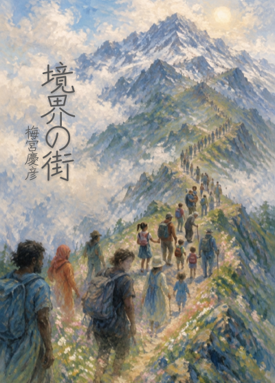

今日は珍しく霧が出ない、と門番は思った。
今日の開門まではあとわずか。門番は自室の広く開かれた窓から外を見やった。外は明るい。ひらけた草原の向こうに、今は雪を被った山々がぽつぽつと頭を見せている。
「もん、もん」
呼ぶ声がして、きょろきょろあたりを見渡すと、窓の外からだった。ふわふわした白いもの――彼はチョロと呼んでいる――が、難儀そうにこちらへ飛んでくるところだった。チョロはあまり飛ぶのがうまくない。浮かんだり沈んだりしながら、ずいぶん遠回りして門番の元へやってくる。
「きた、いっぱい」
そうか、と彼は一声こぼして、腰をあげた。嬉しい知らせではないが、今更驚くことはない。彼は一度に多くの魂を迎えることに、とうとう慣れきっていた。
「おまえの家族はいるかね」
頬にすり寄るようにやってきたチョロに聞いてみると、白い塊は空中でころころと回転した。人の形をしているならば、首をかしげたというところだろう。
窓の外に、未だ行列は見えない。けれど、チョロは多くの魂がやってくることをすぐに悟る。あまり言葉の多くないチョロが、「いっぱい」というのはどれほどだろうか。
外に出てみると、門は変わりなく閉まったままだった。見上げても途中で飽きてしまうほど、高く高く厚い灰色の門。そっけない石造りには、ほとんど装飾がない。
門を背に、彼は魂たちがくる方を見やる。それは途方もなく広い草原で、彼らがどこからやってくるのかは、門番にもわかっていない。
まず、滑らかな岡を登ってくる、男の頭が見えた。きちんと人型をしている。これはしめた、と思った矢先、男がこちらを認めて手を振った。遠すぎて何も聞こえないが、きっと「おおい！」とかなんとか言っているのだろう。
門番も手を振り返す。さらに男の後ろに、もう一人女が見える。こちらも、かなり綺麗な人型を保っていた。今回の死者たちは、まっすぐこちらに来ることができたようだ。すると、天災か。地震や津波といった天災に見舞われた魂たちは、なぜかまっすぐここへ辿り着くことが多いのだ。
しかし、と門番は眉を潜めた。もう先頭の男は、門番と会話ができるほど近くまできているのに、人々の列は延々と続き、終わりが見えない。草原の果てから、次々と人々が現れる。ざっと目算して、何万という単位だろう。
一体何人死んだのだ、と彼は愕然とした。
先頭の男は後ろの女を呼び寄せ、門番へ頭を下げた。
おや、と思う。潮の香りが、強くした。